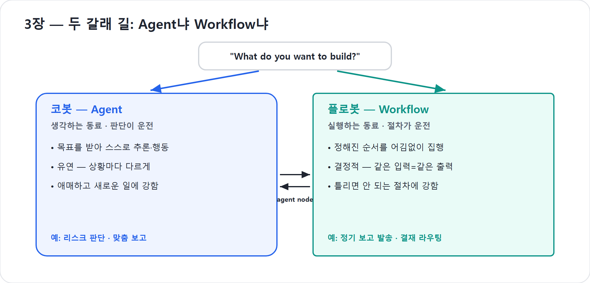

3장. 두 갈래 길 — Agent냐 Workflow냐
Copilot Studio를 처음 열면 화면은 군더더기 없이 단 하나를 묻는다. “무엇을 만들고 싶으신가요(what do you want to build?)” 그리고 답할 수 있는 길은 둘뿐이다. Agent와 Workflow. 이 단순한 두 갈래가 사실은 제품 전체의 세계관을 압축하고 있다. 1장에서 살아남았다고 한 '일하는 봇 둘'이 바로 여기, 첫 화면에서 모습을 드러낸다.
이 장의 목표는 어느 쪽이 더 좋은지를 가르는 것이 아니다. 둘은 우열이 아니라 역할이 다르다. Agent는 모호한 목표를 받아 판단하는 길이고, Workflow는 정해진 절차를 흔들림 없이 실행하는 길이다. 앞으로 우리는 전자를 코봇, 후자를 플로봇이라 부른다. (이 책이 붙인 이름으로, Microsoft 공식 용어가 아니다.) 이 두 이름을 손에 쥐는 순간, Copilot Studio의 많은 선택지가 갑자기 단순해진다.
추론이 운전하는 길, 절차가 운전하는 길
두 길의 차이는 '무엇이 운전대를 잡는가'로 요약된다.
Agent는 추론이 운전한다. 목표를 받으면 그때그때 상황을 판단해 다음에 무엇을 할지 스스로 정한다. 유연하고, 모호한 상황에 강하며, 사람의 말을 알아듣고 빈틈을 메운다. 대신 매번 답이 조금씩 달라질 수 있다. 같은 질문에도 어제와 오늘의 대답이 똑같으리란 보장은 없다. 우리는 이 길을 걷는 봇을 코봇이라 부른다. 생각하고 판단하는 동료다.
Workflow는 절차가 운전한다. 정해진 순서를 정해진 대로, 한 치의 어긋남 없이 집행한다. 같은 입력에는 언제나 같은 절차가 적용된다. 결정론적(deterministic)(같은 입력이면 항상 같은 결과)이고, 신뢰할 수 있으며, 반복에 강하다. 대신 미리 짜둔 길을 벗어나는 상황 앞에서는 유연하지 못하다. 이 길을 걷는 봇을 플로봇이라 부른다. 정해진 순서를 어김없이 집행하는 자동 라인이다.
| 구분 | 코봇: Agent | 플로봇: Workflow |
|---|---|---|
| 운전대 | 추론과 지침 | 절차와 조건 |
| 강점 | 모호함, 맥락, 판단, 작성 | 반복, 승인, 등록, 발송, 감사 |
| 결과 | 상황에 맞게 달라질 수 있음 | 같은 입력이면 같은 경로 |
| 실패 모습 | 그럴듯하지만 빗나간 판단 | 예외 상황에서 멈춤 |
| 어울리는 말 | “알아서 정리해줘” | “항상 이 순서로 처리해줘” |
이 표에서 중요한 줄은 실패 모습이다. 코봇은 유연한 대신 흔들릴 수 있고, 플로봇은 안정적인 대신 부러질 수 있다. 설계자는 이 둘의 장단점을 알고 일을 나누어야 한다.
둘 다 결과물을 향한다
여기서 놓치지 말아야 할 것이 있다. 코봇과 플로봇은 운전하는 방식이 다를 뿐, 향하는 곳은 같다. 둘 다 '정보'가 아니라 동작하는 결과물을 만들어낸다는 점에서 한 식구다. 1장에서 말한 “해줘”의 시대에, 코봇은 판단으로 그 결과물을 만들고 플로봇은 절차로 그 결과물을 만든다. 답하는 봇의 시대가 끝난 자리를, 이 두 일꾼이 나눠 가진 셈이다.
예를 들어 “신제품 출시 프로젝트를 시작해줘”라고 말하면, 코봇은 무엇을 물어야 하는지, 어떤 산출물이 필요한지, 어떤 순서로 초안을 만들지 판단한다. 하지만 “매주 금요일 오후 5시에 프로젝트 상태보고를 Teams 채널에 올리고, 위험도가 높음인 항목은 담당 임원에게 별도 메일을 보내라”는 요구는 플로봇에게 더 잘 맞는다. 코봇은 보고 내용을 판단하고, 플로봇은 반복 실행과 발송을 책임진다.
현장에서
많은 실패는 “AI로 할 일”과 “자동화로 할 일”을 섞어서 생긴다. 보고서의 핵심 메시지를 잡는 것은 AI적 판단이고, 매주 같은 시간에 지정 채널로 보내는 것은 자동화다. 전자를 플로봇에게 억지로 맡기면 분기가 끝없이 늘고, 후자를 코봇에게만 맡기면 실행·권한·감사 기록이 불안해진다.
코봇 한마디
"저는 보고서의 핵심을 잡는 판단에 강하고, 플로봇은 정해진 시간에 정확히 보내는 절차에 강해요. 일을 끝내려면 누가 운전대를 잡아야 하는지 먼저 나누면 됩니다!"
새 Workflows는 옛 agent flow가 아니다
이 장에서 가장 조심해야 할 용어가 있다. 바로 Workflow다. Copilot Studio에는 과거부터 자동화 흐름을 다루는 기능들이 있었고, 일부는 agent flow라는 이름으로도 불렸다. 그러나 이 책에서 플로봇이라고 부르는 것은 2026년 새 Workflows다. 옛 agent flow를 새 이름으로 대충 부르는 것이 아니다.
새 Workflows는 공개 미리보기로 소개된 별도의 새 자동화 경험이다. 핵심은 결정론적 자동화와 에이전틱 판단을 한 공간에서 섞는 데 있다. 2026년 기준 확인된 특징은 통합 비주얼 캔버스, 노드 단위 테스트(inline node testing), 버전 기록(version history), 분석(analytics), agent node, intelligent actions 같은 요소다. 즉 “조건과 액션을 잇는 자동화”에 머무르지 않고, 필요한 지점에서 에이전트를 호출해 판단을 맡길 수 있는 구조로 확장되었다. Power Automate의 클라우드 플로와도 구분된다. 새 Workflows는 Copilot Studio 안에서 코봇과 한 묶음으로 설계·운영되는 자동화이고, agent node로 에이전트의 판단까지 끌어들인다.
옛 방식과 혼동하지 않기 위해 한 줄로 못박자.
이 책의 플로봇 = 새 Workflows(공개 미리보기)
옛 agent flow는 클래식 계열의 옛 방식으로만 언급한다. 둘은 같은 것으로 취급하지 않는다.
이 구분은 앞으로 4부에서 결정적으로 중요해진다. 13장은 Workflows 입문, 14장은 Agent와 Workflow를 서로 엮는 법, 15장은 트리거를 다룬다. 지금은 “플로봇은 새 Workflows”라는 이름표만 정확히 붙여두면 된다.
같은 프로젝트 안에 두 종류의 일이 있다
이제 내 일을 둘로 나눠 보자. 러닝 예제인 “코봇, 프로젝트를 맡다”를 떠올린다. 코봇은 사내 워크숍이나 신제품 출시 같은 프로젝트를 운영해야 한다. 그 안에는 성격이 전혀 다른 두 종류의 일이 섞여 있다.
“이 프로젝트의 성공 기준은 무엇인가”, “이 리스크가 출시를 미룰 만큼 큰가”, “경영진 보고와 실무자 안내의 톤을 어떻게 달리할까”는 매번 상황이 다르고 판단이 필요하다. 코봇의 일이다. 반면 “예산 승인 요청을 결재선 순서대로 태운다”, “매주 금요일 오후 5시에 같은 형식으로 상태보고를 발송한다”, “참석자 명단이 업데이트되면 안내 메일을 보낸다”는 한 번 정한 절차를 어김없이 반복하면 된다. 플로봇의 일이다.
| 프로젝트 업무 | 더 어울리는 쪽 | 이유 |
|---|---|---|
| 프로젝트 목표·범위 정리 | 코봇 | 모호한 요청을 해석하고 빠진 정보를 물어야 함 |
| 이해관계자별 보고 문안 작성 | 코봇 | 대상별 톤과 강조점 판단이 필요함 |
| 예산 승인 라우팅 | 플로봇 | 결재 순서, 권한, 기록이 중요함 |
| 매주 정기 보고 발송 | 플로봇 | 일정 기반 반복 실행이 필요함 |
| 위험도가 높은 항목만 임원에게 알림 | 둘 다 | 코봇이 위험도를 판단하고 플로봇이 알림을 실행 |
둘은 서로를 부른다
그렇다면 둘 중 하나를 골라야 하는가. 그렇지 않다. 가장 중요한 사실은 두 길이 결국 합류한다는 점이다. 새 Workflows에는 agent node라는 연결 지점이 있다. 워크플로가 필요한 순간 에이전트를 불러 판단을 맡기는 자리다. 반대로 “에이전트가 이 흐름을 호출할 때” 실행되는 Workflow는 에이전트의 도구처럼 추가될 수 있다. 양방향이다.
이를 사람의 일터에 빗대면, 생각하는 작업자(코봇)와 어김없이 도는 컨베이어벨트(플로봇)가 한 공장에서 협업하는 그림이다. 작업자가 판단해 라인에 일을 넘기고, 라인은 막히거나 사람의 판단이 필요한 순간에 작업자를 부른다. 판단과 절차가 이렇게 맞물릴 때 비로소 진짜 일이 끝난다.
예를 들어 예산 초안은 코봇의 budget-resource Skill이
만든다. 코봇은 워크숍 규모, 참석자 수, 장소비, 식음료비, 예비비를 원화로
정리한다. 그러나 그 예산안을 실제 승인 시스템에 등록하고, 300만 원
이상이면 팀장과 본부장 승인을 순서대로 태우고, 반려되면 작성자에게 보완
요청을 보내는 절차는 플로봇이 맡는다. 코봇의 판단과 플로봇의 집행이
분리될수록 설계는 안전해진다.
"제가 예산안을 판단해 만들면, 플로봇은 승인 순서와 알림을 흔들림 없이 굴려줘요. 생각하는 일과 집행하는 일을 나누면 팀 전체가 훨씬 안전해집니다."
어느 길을 고를 것인가
판단 기준은 한 줄로 줄일 수 있다. 모호하면 Agent, 어김없어야 하면 Workflow. 상황마다 답이 달라지고 사람의 판단이 필요한 일이라면 코봇에게, 언제나 똑같이 정확하게 반복돼야 하는 일이라면 플로봇에게 맡긴다. 그리고 대부분의 경우 코봇 하나로 시작했다가, 반복되는 절차가 눈에 보이기 시작할 때 플로봇을 붙이는 것이 자연스러운 순서다.
조금 더 실전적으로는 다음 다섯 질문을 던지면 된다.
| 질문 | “예”라면 |
|---|---|
| 사용자의 요청이 매번 다르게 들어오는가? | Agent부터 시작한다. |
| 빠진 정보를 되물어야 하는가? | Agent가 어울린다. |
| 같은 입력에 같은 결과가 반드시 필요한가? | Workflow가 어울린다. |
| 외부 시스템 등록·승인·발송이 필요한가? | Tool 또는 Workflow 경계를 먼저 본다. |
| 감사 기록, 재시도, 실패 분기가 중요한가? | Workflow로 고정한다. |
세 가지 안티패턴
세 가지 안티패턴만 피하면 길이 선명해진다. 첫째, 모든 것을 코봇에게 맡기지 않는다. 실제 발송과 승인에는 연결, 권한, 오류 처리, 감사가 필요하다. 둘째, 모든 것을 플로봇으로 그리지 않는다. 모호한 요청을 전부 분기로 만들면 자동화는 금세 미로가 된다. 셋째, 옛 agent flow와 새 Workflows를 섞어 말하지 않는다. 이 책의 플로봇은 새 Workflows다.
"저에게 모든 일을 몰아주면 실행 기록이 약해지고, 플로봇에게 모든 판단을 맡기면 분기 미로가 생겨요. 모호함은 제가, 어김없는 절차는 플로봇이 맡는 균형이 핵심입니다!"
핵심 정리
| # | 요점 |
|---|---|
| 1 | 홈 화면의 두 선택지 Agent·Workflow가 곧 제품의 세계관이다. |
| 2 | Agent(코봇)=추론이 운전·유연·판단. Workflow(플로봇)=절차가 운전·결정론·신뢰. |
| 3 | 둘은 운전 방식은 달라도 모두 “동작하는 결과물”을 향한다. |
| 4 | 이 책의 플로봇은 2026년 새 Workflows(공개 미리보기)이며, 옛 agent flow와 같은 말이 아니다. |
| 5 | 두 길은 agent node와 도구 호출로 서로를 부른다. 이 합류점은 4부(13~15장)의 핵심이다. |
| 6 | 판단 기준 한 줄: 모호하면 Agent, 어김없어야 하면 Workflow. |
자주 묻는 질문(FAQ)
| 질문 | 답변 |
|---|---|
| 처음부터 Agent와 Workflow를 다 만들어야 하나요? | 아니다. 대부분 코봇 하나로 시작하고, 반복 절차가 보일 때 플로봇을 붙인다. 본격적인 설계는 4부에서 다룬다. |
| 워크플로가 더 안전하면 전부 워크플로로 하면 안 되나요? | 모호함과 예외가 많은 일은 절차로 다 짤 수 없다. 그런 일은 부러지는 대신 판단하는 코봇이 맡아야 한다. |
| Agent가 판단하면 결과가 매번 달라져도 괜찮나요? | 달라져도 되는 일과 안 되는 일을 구분해야 한다. 보고 문안은 달라져도 되지만 승인 라우팅은 달라지면 안 된다. |
| 새 Workflows는 Power Automate와 같은 건가요? | Power Platform 자동화의 맥락과 이어지지만, 이 책에서는 Copilot Studio 새 Workflows의 에이전틱 결합(agent node, intelligent actions 등)에 초점을 둔다. 세부는 13~15장에서 다룬다. |
| agent node는 지금 알아야 하나요? | 이름만 기억하면 된다. Workflow 안에서 에이전트 판단을 끼워 넣는 연결점이며, 14장에서 본격적으로 다룬다. |
다음 장에서는
두 갈래 길과 그 위를 걷는 두 주인공을 만났다. 그런데 “추론이 운전한다”는 코봇을, 개발자가 아닌 내가 정말 만들 수 있을까. 다음 장에서는 그 불안을 정면으로 마주하고, 코봇을 만드는 진짜 진입권이 코딩이 아니라 무엇인지를 밝힌다.
실습 — 코봇 키우기 3단계 (종이 실습): 두 동료의 일을 가른다

〔이어받기〕 1장의 “일을 끝내는 동료” 상을 들고 온다. 이번엔 그 일을 둘로 나눈다.
2-a. 업무를 카드로 적는다. 출시 프로젝트의 실제 업무 8–10개를 한 줄씩 카드로 적는다(예: 리스크 판단, 이해관계자별 맞춤 보고, 매주 금요일 상태보고 발송, 결재선 태우기 …).
2-b. 두 더미로 분류한다. 각 카드를 코봇(판단) 과 플로봇(절차) 으로 나눈다.
| 코봇(판단)의 일 | 플로봇(절차)의 일 |
|---|---|
| 리스크가 큰지 판단 | 매주 금요일 정해진 양식으로 상태보고 발송 |
| 이해관계자별 맞춤 보고 | 결재선 태우기(승인 라우팅) |
| 예외 상황 대응 | 체크리스트 집행 |
2-c. 애매한 카드를 따로 뺀다. 어느 더미에도 딱 안 맞는 카드를 빼서 “왜 애매한가”를 적어 둔다(4부에서 둘을 엮을 때 다시 꺼낸다).
〔성장〕 코봇은 판단의 영역을, 플로봇은 절차의 영역을 각자 갖는다 — 두 주인공이 처음으로 나란히 선다. 〔검증 포인트〕 두 더미를 보고 “이 일은 왜 코봇/플로봇의 몫인가”를 한 줄로 댈 수 있으면 통과.